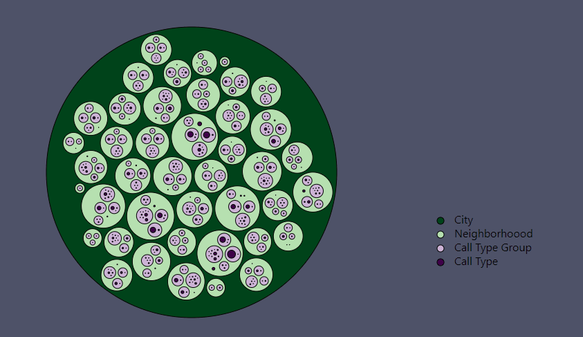

Space-Filling Diagram Visualization
Interactivity
Hover to see the tooltip with name and amount of cases. Click to any circle of last 2 layers to zoom into a clicked neighborhoood.
Encoding
Each lap shows a pacticular column from data. The first and the biggest lap (root) colored dark green shows the city (San Francicso in this case).
The second smaller lap colored light green shows neighborhooods in that city.
The third smaller lap colored light purple shows call type groups of cases happened in a particular neighborhoood.
The fourh and the smallest lap colored dark purple shows call type of cases hiercical divided by each case type group happened in that neighborhoood.
After click the city lap dissapears and neighborhoood lap becomes colored in dark green.
Wrangling
Data was filtered to show only April 2020 cases and only San Francicso city. The column "Neighborhooods - Analysis Boundaries" was renamed to "Neighborhooods". Data in csv format can be found here.
Conclusion
Using this chart we can see how April cases are divided for each neighborhoood. For example, we see two relatively big light green circles: Tenderloin (2k cases) and South of Market (1.6k cases). Clicking on each of them we can see the amount by each case type and case type group. On the other hand, there are few small circles. For example, circle "Treasure Island" has just two case groups: Potentially Life-threatening and Non-Life threatening. Clicking on "Treasure Island" circle we can find out that this neighborhoood had 6 cases of Traffic Collisions as Non-Life threatening and 19 Traffic Collisions as Potentially Life-threatening.